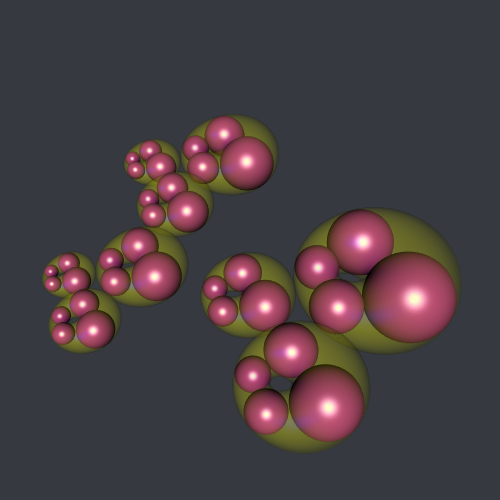
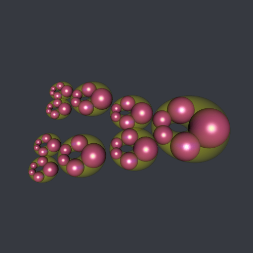
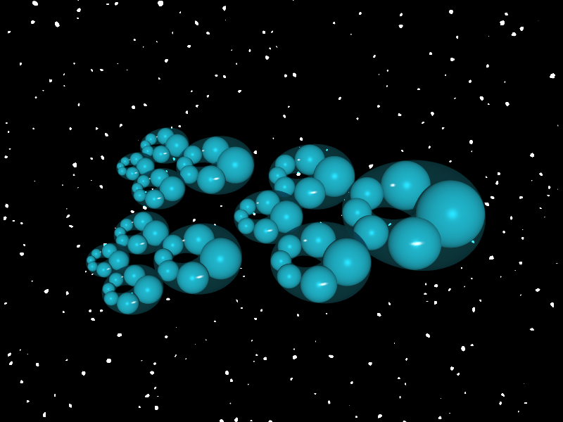
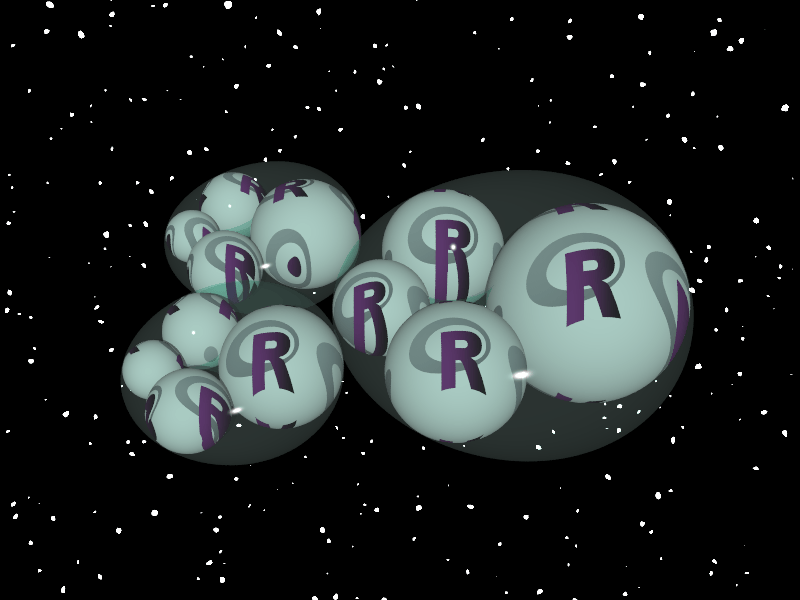
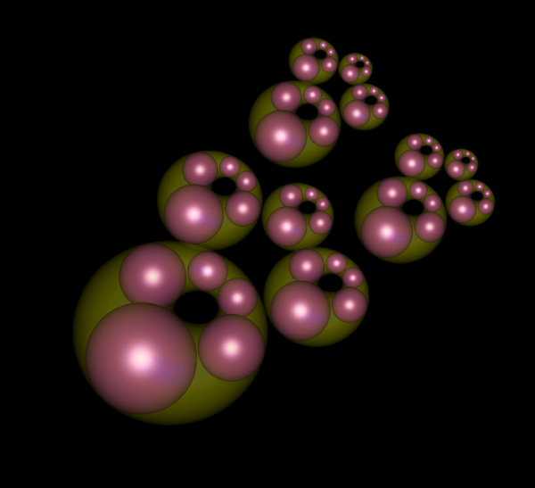

Drawing nested Steiner chains
Posted on July 13, 2019
by Stéphane Laurent
This is a Steiner chain with its enveloping cyclide:

And these are nested Steiner chains:

With R
We will include the cyclides in the plot. We firstly write a function returning a mesh of a cyclide. It is obtained by applying an inversion to the mesh of a torus.
library(rgl)
torusMesh <- function(R, r, S, s, arc, ...){
vertices <- matrix(NA_real_, nrow = 3L, ncol = S*s)
Normals <- matrix(NA_real_, nrow = 3L, ncol = S*s)
full <- arc == 2*pi
SS <- ifelse(full, S, S-1)
indices <- matrix(NA_integer_, nrow = 4L, ncol = SS*s)
u_ <- if(full){
seq(0, 2*pi, length.out = S+1)[-1]
}else{
seq(0, arc, length.out = S)
}
v_ <- seq(0, 2*pi, length.out = s+1)[-1]
for(i in 1:S){
cos_ui <- cos(u_[i])
sin_ui <- sin(u_[i])
cx <- R * cos_ui
cy <- R * sin_ui
for(j in 1:s){
rcos_vj <- r*cos(v_[j])
n <- c(rcos_vj*cos_ui, rcos_vj*sin_ui, r*sin(v_[j]))
Normals[, (i-1)*s+j] <- -n
vertices[, (i-1)*s+j] <- c(cx,cy,0) + n
}
}
# quads
s <- as.integer(s)
for(i in 1L:SS){
ip1 <- ifelse(i==S, 1L, i+1L)
for(j in 1L:s){
jp1 <- ifelse(j==s, 1L, j+1L)
indices[,(i-1)*s+j] <-
c((i-1L)*s+j, (i-1L)*s+jp1, (ip1-1L)*s+jp1, (ip1-1L)*s+j)
}
}
qmesh3d(
vertices = vertices,
indices = indices,
homogeneous = FALSE,
material = list(...),
normals = t(Normals)
)
}
# only for mu>c (ring cyclide)
cyclideMesh <- function(mu, a, c, S=128, s=64, arc=2*pi, ...){
b <- sqrt(a^2-c^2)
bb <- b*sqrt(mu^2-c^2)
omega <- (a*mu + bb)/c
Omega <- c(omega,0,0)
inversion <- function(M){
Omega + 1/c(crossprod(M-Omega)) * (M-Omega)
}
d <- (a-c)*(mu-c)+bb
r <- c*c*(mu-c) / ((a+c)*(mu-c)+bb) / d
R <- c*c*(a-c) / ((a-c)*(mu+c)+bb) / d
bb2 <- b*b*(mu*mu-c*c)
denb1 <- c*(a*c-mu*c+c*c-a*mu-bb)
b1 <- (a*mu*(c-mu)*(a+c)-bb2+c*c+bb*(c*(a-mu+c)-2*a*mu))/denb1
denb2 <- c*(a*c-mu*c-c*c+a*mu+bb)
b2 <- (a*mu*(c+mu)*(a-c)+bb2-c*c+bb*(c*(a-mu-c)+2*a*mu))/denb2
omegaT <- (b1+b2)/2
tmesh <- torusMesh(R, r, S, s, arc, ...)
tmesh$normals <-
apply(tmesh$normals + tmesh$vb[1:3,] + c(omegaT,0,0), 2, inversion)
tmesh$vb[1:3,] <- apply(tmesh$vb[1:3,] + c(omegaT,0,0), 2, inversion)
tmesh$normals <- tmesh$vb[1:3,] - tmesh$normals
tmesh
}Now here is the code which plots the nested Steiner chains:
# make a smooth unit sphere
unitSphere <- subdivision3d(icosahedron3d(), depth=4)
unitSphere$vb[4,] <-
apply(unitSphere$vb[1:3,], 2, function(x) sqrt(sum(x^2)))
unitSphere$normals <- unitSphere$vb
# draw a sphere in the x-y plane
drawSphere <- function(x, y, radius, ...){
shade3d(
translate3d(
scale3d(unitSphere, radius, radius, radius),
x, y, 0),
...)
}
# draw a cyclide translated by (x,y,0)
drawCyclide <- function(mu, a, c, x, y, ...){
mesh <- cyclideMesh(mu, a, c)
shade3d(translate3d(mesh, x, y, 0), ...)
}
# image of circle (center, radius) by the inversion
# with center c and power k
iotaCircle <- function(c, k, center, radius){
r <- sqrt(abs(k))
z1 <- sign(k) * (center-c)/r
D1 <- (radius/r)^2 - c(crossprod(z1))
z2 <- -z1/D1
R2 <- sqrt(c(crossprod(z2)) + 1/D1)
list(center = r*z2+c, radius = r*R2)
}
# n: vector, the numbers of spheres at each step
# -1 < phi < 1, phi != 0
steiner <- function(n, phi, color="red", shift=0,
Center=c(0,0), radius=2, epsilon = 0.005){
depth <- length(n)
invphi <- 1/phi
I <- c(radius*invphi, 0) + Center
k <- radius*radius*(1-invphi*invphi)
m <- n[1]
sine <- sin(pi/m)
Coef <- 1/(1+sine)
O1x <- 2*radius*invphi
CRadius <- Coef*radius
CSide <- CRadius*sine
if(depth == 1){
circle <- iotaCircle(I-Center, k, c(0,0), CRadius - CSide)
mu <- (radius - circle$radius)/2;
a <- (radius + circle$radius)/2;
c <- (circle$center[1] - O1x)/2;
pt <- Center + circle$center/2;
drawCyclide(mu, a, c, pt[1]-O1x/2, pt[2],
color = "yellow", alpha = 0.2)
}
for(i in 1:m){
beta <- (i+shift)*2*pi/m
pti <- c(CRadius*cos(beta), CRadius*sin(beta)) + Center
cc <- iotaCircle(I, k, pti, CSide)
center <- cc$center - c(O1x,0)
r <- cc$radius
if(depth == 1){
drawSphere(center[1], center[2], r-epsilon, color = color)
}
if(depth>1){
steiner(n[-1], phi, color=color,
Center=center, radius=r, shift = -shift)
}
}
return(invisible())
}
# background color
bgColor <- rgb(54, 57, 64, maxColorValue = 255)
# plot
open3d(windowRect = c(50,50,550,550))
bg3d(bgColor)
view3d(0, -40, zoom = 0.75)
steiner(n = c(3,3,4), phi = 0.3, color = "#B12A90FF", shift = 0.25)Here is how to make a gif animation the nested Steiner chains:
# "bounding box"
bBox <- function(){
r <- 2
lines3d(
rbind(
c(r, r, 0), c(-r, r, 0), c(-r, -r, 0), c(r, -r, 0)
),
color = bgColor, alpha = 0
)
}
shifts <- seq(0, 1, length.out = 46)[-1]
open3d(windowRect = c(50,50,550,550))
bg3d(bgColor)
view3d(0, -40, zoom = 0.75)
for(i in seq_along(shifts)){
steiner(n = c(3,3,5), phi = 0.3, color = "#B12A90FF",
shift = shifts[i])
bBox()
snapshot3d(sprintf("img-%03d.png", i))
clear3d()
}
pngs <- list.files(pattern = "^img-.*png$")
gifski::gifski(pngs, "SteinerChain_R.gif",
width = 500, height = 500, delay = 0.04)
file.remove(pngs)
With POV-Ray
#version 3.7;
global_settings { assumed_gamma 1 }
#include "colors.inc"
#include "textures.inc"
#include "glass.inc"
// image of the circle (Center,Radius) by inversion pole c power k ---
#macro invertedCircle(c, k, Center, Radius)
#local r = sqrt(abs(k));
#local sign = (k>0 ? 1 : -1);
#local z1 = sign * (Center-c)/r;
#local D1 = Radius*Radius/r/r - vdot(z1,z1);
#local z2 = -z1/D1;
#local R2 = sqrt(vdot(z2,z2) + 1/D1);
#local z3 = r*z2+c;
<z3.x, z3.y, r*R2>
#end
// delete first element of an array ----------------------------------
#macro tail(Array)
#local l = dimension_size(Array, 1);
#local out = array[l-1];
#for(i, 0, l-2)
#local out[i] = Array[i+1];
#end
out
#end
// main macro --------------------------------------------------------
// n: array of integers >1, the numbers of spheres at each step
// phi: number -1 < phi < 1, phi /= 0
// shift: number 0 <= shift < 1
#macro Steiner3D(n, phi, shift, Center, Radius, epsilon)
#local Depth = dimension_size(n, 1);
#local m = n[0];
#local sine = sin(pi/m);
#local Side = Radius*sine; // side length of the m-gon
#local Coef = 1/(1+sine); // Radius/(Radius+Side)
#local CSide = Coef*Side;
#local CRadius = Coef*Radius;
#local invphi = 1/phi;
#local I = <Radius*invphi,0> + Center; // inversion pole
#local k = Radius*Radius*(1-invphi*invphi); // inversion power
#local O1 = <2*invphi*Radius,0,0>; // center of exterior sphere
// -----------------------------------------------------------------
union {
// cyclides ------------------------------------------------------
#if(Depth=1)
#local circle = invertedCircle(I-Center, k, <0,0>, CRadius-CSide);
#local r = circle.z;
#local center = <circle.x, circle.y>;
#local mu = (Radius - r)/2;
#local a = (Radius + r)/2;
#local c = (circle.x - O1.x)/2;
#local b = sqrt(a*a-c*c);
#local pt = Center + center/2;
#local O = <pt.x - O1.x/2, pt.y, 0>;
polynomial {4
xyz(2,0,0): -2*mu*mu+2*b*b-4*a*a,
xyz(1,0,0): 8*a*c*mu,
xyz(0,0,0): -4*c*c*mu*mu+mu*mu*mu*mu+b*b*b*b-2*mu*mu*b*b,
xyz(0,2,0): -2*mu*mu-2*b*b,
xyz(0,0,2): -2*mu*mu+2*b*b,
xyz(2,2,0): 2,
xyz(2,0,2): 2,
xyz(0,2,2): 2,
xyz(4,0,0): 1,
xyz(0,4,0): 1,
xyz(0,0,4): 1
texture {
Dark_Green_Glass
finish {
reflection 0
}
}
translate O
}
#end
// spheres -------------------------------------------------------
#local i=1;
#while(i<=m)
#local beta = 2*(i+shift)*pi/m;
#local pti = <CRadius*cos(beta), CRadius*sin(beta)> + Center;
#local circle = invertedCircle(I, k, pti, CSide);
#local center = <circle.x, circle.y, 0> - O1;
#local r = circle.z;
#if(Depth=1)
sphere {
center, r-epsilon
texture {
Chrome_Metal
finish {
ambient 0.05
diffuse 2
reflection 0
brilliance 1
specular 1.08
roughness 0.01
}
}
}
#else
Steiner3D(tail(n), phi, -shift, center, r, epsilon)
#end
#local i = i+1;
#end
} // end of union
#end
// ----------------------------- SCENE ---------------------------- //
// sky ---------------------------------------------------------------
#declare D = .5;
sky_sphere {
pigment {
crackle
color_map {
[pow(0.5, D) color Black]
[pow(0.6, D) color White*10]
}
scale .005/D
}
}
// ----------------------------- plot ----------------------------- //
#declare Center = <0,0>; // arbitrary
#declare Radius = 3; // arbitrary >0
// camera and light source -------------------------------------------
camera {
location <0, 0, -12>
look_at <Center.x, Center.y, 0>
angle 40
rotate <0,0,0>
}
light_source { <0, 0, -60> White }
//
#declare n = array[3] {3,4,6};
#declare phi = 0.3;
#declare nframes = 45;
#declare shift = frame_number/nframes;
object {
Steiner3D(n, phi, shift, Center, Radius, 0.005)
rotate <50, 0, 0>
translate <0, 0, 5>
scale 1.85
}
/* ini file ----------------------------------------------------------
Antialias = On
Antialias_Threshold = 0.3
Antialias_Depth = 3
Input_File_Name = SteinerChain.pov
Initial_Frame = 1
Final_Frame = 45
Cyclic_Animation = on
Pause_when_Done = off
------------------------------------------------------------------- */
We get a nice result when we map a picture to the spheres:
#if(Depth=1)
sphere {
center, r-epsilon
pigment{
image_map {
png "R-Ladies.png"
interpolate 2
}
scale 1.1*sqrt(r)
}
}
#else
With Asymptote
This Asymptote program produces the frames of the animation:
settings.render = 4;
settings.outformat = "eps";
// -------------------------------------------------------------------
import solids;
// files to create
string[] files = {
"SC-000", "SC-001", "SC-002", "SC-003", "SC-004", "SC-005",
"SC-006", "SC-007", "SC-008", "SC-009", "SC-010", "SC-011",
"SC-012", "SC-013", "SC-014", "SC-015", "SC-016", "SC-017",
"SC-018", "SC-019", "SC-020", "SC-021", "SC-022", "SC-023",
"SC-024", "SC-025", "SC-026", "SC-027", "SC-028", "SC-029",
"SC-030", "SC-031", "SC-032", "SC-033", "SC-034", "SC-035",
"SC-036", "SC-037", "SC-038", "SC-039", "SC-040", "SC-041",
"SC-042", "SC-043", "SC-044"};
// camera and light --------------------------------------------------
size(10cm);
currentprojection = orthographic(2,2,6);
currentlight = (20,20,60);
currentlight.background = black;
viewportmargin = (10,10);
// image of the circle (Center,Radius) by inversion pole c power k ---
struct Circle {
pair center;
real radius;
}
Circle invertedCircle(pair c, real k, pair Center, real Radius){
real r = sqrt(abs(k));
pair z1 = sgn(k) * (Center-c)/r;
real D1 = Radius*Radius/r/r - dot(z1,z1);
pair z2 = -z1/D1;
real R2 = sqrt(dot(z2,z2) + 1/D1);
Circle out;
out.center = r*z2 + c;
out.radius = r*R2;
return out;
}
// -------------------------------------------------------------------
struct Sphere {
triple center;
real radius;
}
// -------------------------------------------------------------------
struct Cyclide {
real mu;
real a;
real c;
triple shift;
}
// -------------------------------------------------------------------
// n: array of length depth, the numbers of spheres for each step
// phi: number -1 < phi < 1, phi /= 0
// shift: number 0 <= shift < 1
void Steiner3D(Sphere[] spheres, Cyclide[] cyclides, int[] n, real phi,
int depth, real shift, pair Center = (0,0), real Radius = 2){
real m = n[0];
real sine = sin(pi/m);
real Side = Radius*sine; // side length of the m-gon
real Coef = 1/(1+sine); // Radius/(Radius+Side)
real CSide = Coef*Side;
real CRadius = Coef*Radius;
real invphi = 1/phi;
pair I = (Radius*invphi,0) + Center; // inversion pole
real k = Radius*Radius*(1-invphi*invphi); // inversion power
real O1x = 2*invphi*Radius; // (O1x,0,0) center of exterior sphere
// -----------------------------------------------------------------
if(depth == 1){
Cyclide newcyclide;
Circle circle = invertedCircle(I-Center, k, (0,0), CRadius-CSide);
newcyclide.mu = (Radius - circle.radius)/2;
newcyclide.a = (Radius + circle.radius)/2;
newcyclide.c = (circle.center.x - O1x)/2;
pair pt = Center + circle.center/2;
newcyclide.shift = (pt.x - O1x/2, pt.y, 0);
cyclides.push(newcyclide);
}
// -----------------------------------------------------------------
for(int i = 0; i < m; ++i){
real beta = 2*(i+shift)*pi/m;
pair pti = (CRadius*cos(beta), CRadius*sin(beta)) + Center;
Circle circle = invertedCircle(I, k, pti, CSide);
pair center = (circle.center.x - O1x, circle.center.y);
real r = circle.radius;
if(depth == 1){
Sphere newsphere;
newsphere.center = (center.x, center.y, 0);
newsphere.radius = r;
spheres.push(newsphere);
}else{
Steiner3D(spheres, cyclides, n[1:], phi, depth-1, -shift,
center, r);
}
}
}
// -------------------------------------------------------------------
int[] n = {3,4,5};
real phi = 0.4;
int depth = n.length;
path3 boundingbox = circle(c=O, r=2.1, normal=Z);
real epsilon = 0.005;
for(int k = 0; k < files.length; ++k){
// compute spheres and cyclides ------------------------------------
Sphere[] spheres = new Sphere[0];
Cyclide[] cyclides = new Cyclide[0];
real shift = k/files.length;
Steiner3D(spheres, cyclides, n, phi, depth, shift);
//
picture pic;
draw(pic, boundingbox, black+opacity(0));
// draw the spheres ------------------------------------------------
for(int i = 0; i < spheres.length; ++i){
Sphere s = spheres[i];
draw(pic, surface(sphere(s.center, s.radius-epsilon)),
rgb("8c2981ff"));
}
// draw the cyclides -----------------------------------------------
for(int i = 0; i < cyclides.length; ++i){
Cyclide c = cyclides[i];
real b = sqrt(c.a*c.a-c.c*c.c);
triple F(pair uv){
real h = c.a-c.c*cos(uv.x)*cos(uv.y);
real x = (c.mu*(c.c-c.a*cos(uv.x)*cos(uv.y))+b*b*cos(uv.x))/h;
real y = (b*sin(uv.x)*(c.a-c.mu*cos(uv.y)))/h;
real z = b*sin(uv.y)*(c.c*cos(uv.x)-c.mu)/h;
return (x,y,z);
}
surface s = surface(F, (0,0), (2pi,2pi), 40, 40, Spline);
draw(pic, shift(c.shift)*s, yellow+opacity(0.2));
}
// -----------------------------------------------------------------
add(pic);
shipout(files[k], bbox(black, FillDraw(black)));
erase();
}
With three.js
Here is a variant with three.js. I replaced the spheres with “Barth polyedra”.